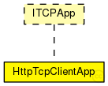

This documentation is released under the Creative Commons license
This documentation is released under the Creative Commons licenseEin HTTP-Client-Modul, das über einen kompletten Netzwerkstack mittels TCP mit einem HTTP-Server-Modul kommuniziert.
Das Modul ist als TCPApp ausgeführt und kann deshalb als Anwendung mit einem StandardHost-Modul verwendet werden.
The following diagram shows usage relationships between types. Unresolved types are missing from the diagram.
The following diagram shows inheritance relationships for this type. Unresolved types are missing from the diagram.
| Name | Type | Default value | Description |
|---|---|---|---|
| httpHost | string |
< Hostname für Host-Feld im HTTP-Request |
|
| page | string |
< Name des Dokuments im HTTP-Request |
|
| connectAddress | string |
Die IP-Adresse (der Name kann verwendet werden) des Servers. |
|
| connectPort | int |
Die Portadresse des Servers. |
|
| processingTime | double | 0 |
Die Zeit (je Empfang), die der Client zum Verarbeiten der vom Server empfangenen Daten benötigt. |
| localPort | int | 2080 |
Die eigene Portadresse. |
| localAddress | string | "" |
IP-Adresse, die beim Senden verwendet wird; hier: automatisch festgelegt. |
| dataTransferMode | string | "bytestream" |
Es werden reale Daten übertragen. |
| Name | Direction | Size | Description |
|---|---|---|---|
| tcpIn | input | ||
| tcpOut | output |
// // Ein HTTP-Client-Modul, das über einen kompletten Netzwerkstack mittels TCP mit einem HTTP-Server-Modul kommuniziert. // // Das Modul ist als TCPApp ausgeführt und kann deshalb als Anwendung mit einem StandardHost-Modul verwendet werden. // simple HttpTcpClientApp like ITCPApp { parameters: string httpHost; //< Hostname für Host-Feld im HTTP-Request string page; //< Name des Dokuments im HTTP-Request string connectAddress; // Die IP-Adresse (der Name kann verwendet werden) des Servers. int connectPort; // Die Portadresse des Servers. volatile double processingTime @unit(s) = default(0); // Die Zeit (je Empfang), die der Client zum Verarbeiten // der vom Server empfangenen Daten benötigt. int localPort = default(2080); // Die eigene Portadresse. string localAddress = default(""); // IP-Adresse, die beim Senden verwendet wird; hier: automatisch festgelegt. string dataTransferMode = default("bytestream"); // Es werden reale Daten übertragen. gates: input tcpIn; output tcpOut; }
This documentation is released under the Creative Commons license